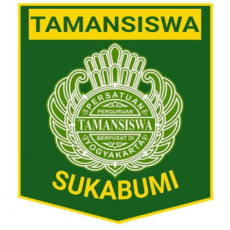

Ing ngarsa sung tuladha
Di depan memberi teladan.

Tanya pelajaran, minta bantuan tugas, atau kirim foto dan dokumen untuk dibahas bersama asisten AI sekolah.
Enter untuk kirim, Shift+Enter untuk baris baru. AI bisa keliru, jadi cek kembali info penting.
Asisten ini dibuat untuk mendampingi proses belajar di SMK Taman Siswa Cabang Kota Sukabumi, bukan menggantikan guru.
Di depan memberi teladan.
Di tengah membangun semangat.
Di belakang memberi dorongan.